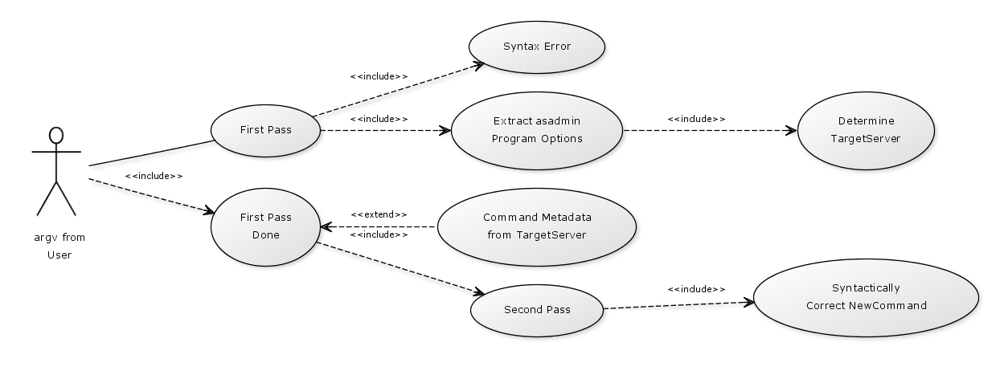
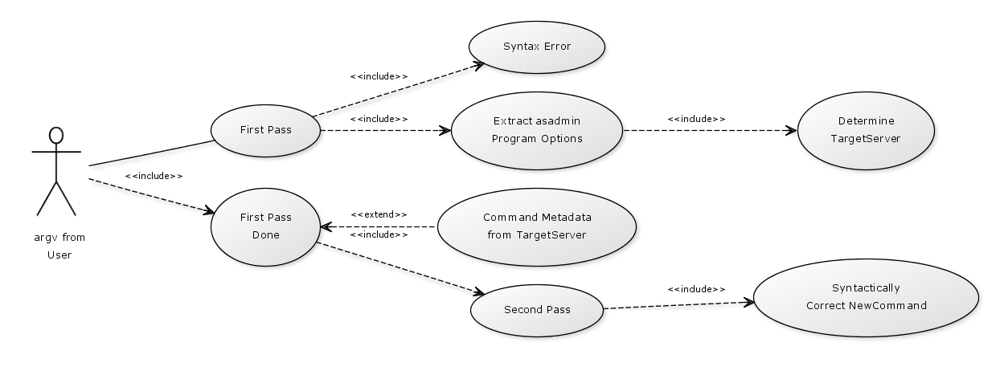

Provides for functionality of the new command line interface implementation.
Package Specification
Related Documentation
Please see: The design document and command line specification.
The main classes for parsing are represented by the class diagram in this picture (Thanks to YUML -- for example,
see the YUML in action by clicking here.
 The usecase diagram is shown below, at least for ctitical use cases (See here for YUML):

As you can from the Javadoc of various classes, care has been taken not to expose the classes of this package
outside. The access specification has been used such that only few classes in this package are public. The Parser
class as of now supports only the backward compatible command line parsing in that the options of asadmin program
and options and operands for the commands appear after the command name. It's a two pass parser in that:
The usecase diagram is shown below, at least for ctitical use cases (See here for YUML):

As you can from the Javadoc of various classes, care has been taken not to expose the classes of this package
outside. The access specification has been used such that only few classes in this package are public. The Parser
class as of now supports only the backward compatible command line parsing in that the options of asadmin program
and options and operands for the commands appear after the command name. It's a two pass parser in that:
- First pass extracts the program options and segragates program options from command arguments. Command arguments
may contain command options and its operands. The program options help reach the target server that determines
the server where command is actually implemented.
A Driver class then gets the command metadata from the server. This metadata along with the command arguments
are fed into the second pass.
- Second Pass is similar to first pass, the only diffrence being in its access to command metadata which first
pass does not have.
At the end of both these passes, Parser guarantees that there are no syntax errors. There are JAXB generated classes
that get their metadata from an XML. This XML is the data serialization technique used. The client communicates
with the server and receives the metadata in the form of an XML which is then deserialized to the instance of
class CommandDesc. CommandDesc, OperandDesc and OptionDesc are JAXB generated classes.
A tricky part is supporting both old and new command syntaxes (i.e. implementation of the asadmin program option
and command option/operand separation). The command line should remain largely compatible with previous release.
Note that creation of the XML is completely driven by the annotations on a command implementation. This
is generic code running in the server and classes and interfaces supporting that are provided elsewhere.
Classes in the org.glassfish.enterprise.admin.ncli.comm package deal with the client->server communication. Since
all of the communication happens over HTTP/S, the classes in this package handle the raw HTTP communication like
creation of actual HTTP request, request headers, request POST, file upload, file download, handling of response
from the server etc.
@since GlassFish v3 September 2009